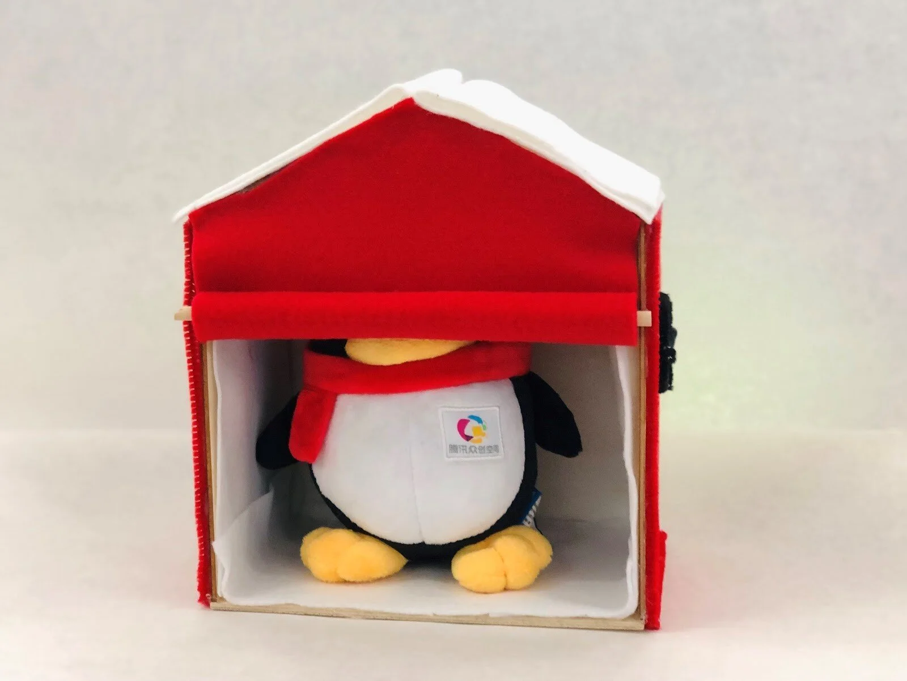
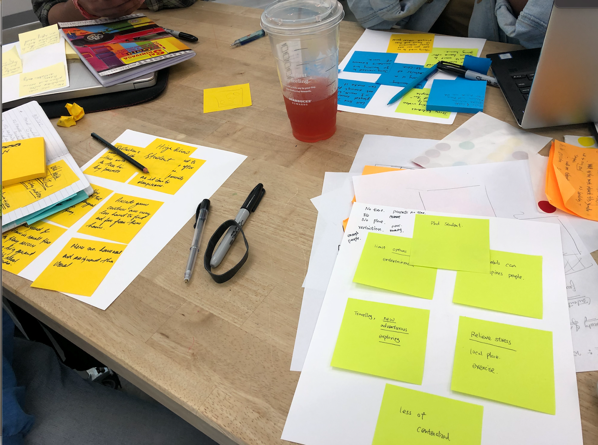
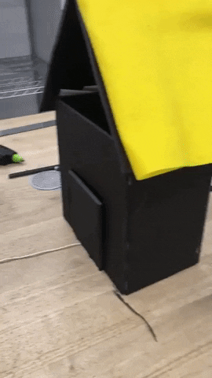
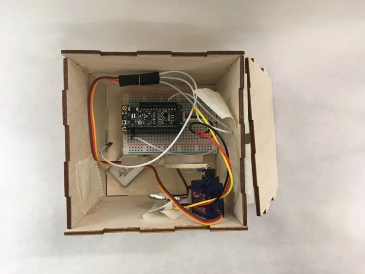
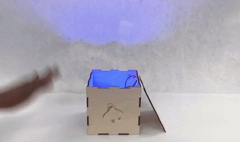

Overview
"You Have Me" is an inconspicuous penguin that sits on your desk, readily accessible in times of great need. This penguin got its start from an open ended "How Might We Encourage Fun?" design question. It's intention is to entertain full-time workers who spend most of their day at a desk and find their routines repetitive. Iterating from a cardboard prototype to a plywood version with servos and LEDs, "You Have Me" has become a small penguin that responds to patting, shaking, squeezing.




